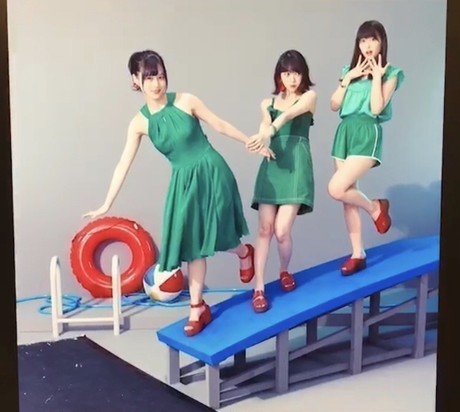

2018/0715Sun#ジコチュー
8/8 発売
ジコチューでいこう！
のジャケ写が公開されました。
オフショット〜


わたしは一応、全ポジション経験しました。笑
撮影中も美月とれんかと
わちゃわちゃ楽しかった〜♪
タイプCよろしくお願いします！


オレンジ色が夏を感じさせますね！
イヤリングおっきくてかわいい〜o(･x･)/
緑着るのも珍しいかも。

昨日大好きなゆかっちに会えて
お喋りしたり楽しかったな〜
会ってすぐ「うなばら〜♪」って
私の歌割り真似しながら指差してきた。笑
そんなゆかっちがね、
ジュース買ってくれたの♡
太っ腹！
ありがとう！
わたしは豆のお菓子ポリッピーではないからね！笑
ツアーもうすぐかぁ
楽しみです
では。
2018/07/15 15:06
コメント(434)
未央奈ちゃん更新ありがとー！
ジャケ写かわいい(>_<)
ジコチューで行こう！発売が待ち遠しいなぁ！
豆のお菓子…あ、ポリ未央奈…
ごめんなさい、なんでもないです…
ジャケ写かわいい(>_<)
ジコチューで行こう！発売が待ち遠しいなぁ！
豆のお菓子…あ、ポリ未央奈…
ごめんなさい、なんでもないです…
ジコチューで行こう！夏らしく爽やかな曲で既にハマって
ます笑笑。今年の夏はジコチューで乗り切ろう！
おぎゆかと仲良いねぇ…姉妹みたい！
ます笑笑。今年の夏はジコチューで乗り切ろう！
おぎゆかと仲良いねぇ…姉妹みたい！
名古屋と宮城行くから頑張って！
可愛い。
可愛い。
未央奈さん凄いセクシー！
みおな超可愛い！
髪型さいこう！
ブログ更新ありがとう！
髪型さいこう！
ブログ更新ありがとう！
みおにゃんおはよー！
半端ないって！マジで！
「君らしさ」全開やん！笑
ガチで惚れるー！
めっちゃ大好き♥️
半端ないって！マジで！
「君らしさ」全開やん！笑
ガチで惚れるー！
めっちゃ大好き♥️
未央奈ー(*´∀`*)ﾉおはよう〜
全ポジション経験したんだね！
すごいね
音楽の日観たよ
ジコチューで行こう！
インフルエンサー
どちらも最高だったよ!!!!
初めて聴いたジコチューで行こう！
まさに夏！だね
歌詞もちゃんと意味が込められてるね
今日の握手会楽しんでね♪
全ポジション経験したんだね！
すごいね
音楽の日観たよ
ジコチューで行こう！
インフルエンサー
どちらも最高だったよ!!!!
初めて聴いたジコチューで行こう！
まさに夏！だね
歌詞もちゃんと意味が込められてるね
今日の握手会楽しんでね♪
音楽の日見たよ
とってもよかった
ジャケ写の衣装かわいすぎる
暑い日が続くけど頑張ってね
とってもよかった
ジャケ写の衣装かわいすぎる
暑い日が続くけど頑張ってね
ジャケ写の堀ちゃん可愛すぎ!!
typeC絶対買います(^o^)
typeC絶対買います(^o^)
堀ちゃん、かわいい〜
堀ちゃん、大好きだよー
堀ちゃん、大好きだよー
おはよう～(^-^)
テレビ見れんかったから次回を楽しみに
しとくね～(^o^ゞ
テレビ見れんかったから次回を楽しみに
しとくね～(^o^ゞ
堀ちゃん
おはよ〜
音楽の日
『ジコチューで行こう』聴いたよ☺️
みんなの手の動きやダンスも可愛くて
ホント夏にぴったりな曲です
曲の終盤に『だるまさん』のところでは
僕たちも声で参加できるかな(笑)
どのフレーズも凄く大好き✨
なかでもメンバーみんな横列になって、
未央奈が中心になるところが好きだな(笑)
堀ちゃんがウインクした仕草に
キュキュキュイーンっときました(*/∀＼*)
早くも
フルコーラスで聴きたくなっちゃう(笑)
ジャケ写もめちゃ可愛すぎ！！
浮き輪にボールにプールの飛び込み台！
夏らしく涼しさ全開な楽しいジャケ写ですね。
づっきー、れんたん、堀ちゃん
三人三脚での
わちゃわちゃ感伝わってくるよ〜(笑)
衣装も緑に赤系とくればスイカ色みたいで
凄くお似合いです
なのでタイプC絶対買います☺️
特にタイプCはプラス10枚✌️
あれ！もーーー予約しました(笑)
ジャケ写のオフショットありがとう
めちゃ嬉しいな〜
8月8日いまから楽しみ
そう！
オレンジ色は
太陽のような熱い夏色にぴったりですね。
僕はオレンジ色見ると自然と燃えてきます(笑)
個人的にオレンジ色は欠かせません(笑)
『エスパ魂』なもんでね
音楽の日
おぎゆかちゃんが出るまで
深夜までずっと見てました☺️
夜遅くにもかかわらずテレビに向かって
応援してましたよ(笑)
おぎゆかちゃんも
めちゃ可愛かったです
でも未央奈が１番ですよ（小声)笑
枠をこえた関係凄く素敵だね✨
僕も見習わないと(^o^;)
ずっと仲良しでいてね❤️
未央奈のセクシー衣装にごっつぁんです(笑)
大切に堀ちゃんフォルダに保存します(笑)
写真ありがとう❤️
あ！今日も朝から
静岡ではセミ達が鳴き始めました！
それと
トンボや、ツバメ達も
チラホラ飛び回ってます♪
未央奈のところではどうですか〜？
まもなく全国ツアーですね✨
今年の夏は平成最後ということなので！
猛暑なのかな〜
毎日、水分補給多めにし
堀ちゃんお身体に気を付けて頑張ってね。
夏が終れば秋が待ってるので
お互い元気に乗りきりましょう✋
では
その前に
明日！予約して『プラチナフラッシュ5』
ようやく家に届くんですよ
見たら感想します✌️☺️
ではでは
おぎゆかちゃんと未央奈のツーショット
超絶可愛い〜(*≧з≦)
ポリッピーまじウケる( *´艸｀)
ほりっぴ〜またね(っ･ω･)っ
おはよ〜
音楽の日
『ジコチューで行こう』聴いたよ☺️
みんなの手の動きやダンスも可愛くて
ホント夏にぴったりな曲です
曲の終盤に『だるまさん』のところでは
僕たちも声で参加できるかな(笑)
どのフレーズも凄く大好き✨
なかでもメンバーみんな横列になって、
未央奈が中心になるところが好きだな(笑)
堀ちゃんがウインクした仕草に
キュキュキュイーンっときました(*/∀＼*)
早くも
フルコーラスで聴きたくなっちゃう(笑)
ジャケ写もめちゃ可愛すぎ！！
浮き輪にボールにプールの飛び込み台！
夏らしく涼しさ全開な楽しいジャケ写ですね。
づっきー、れんたん、堀ちゃん
三人三脚での
わちゃわちゃ感伝わってくるよ〜(笑)
衣装も緑に赤系とくればスイカ色みたいで
凄くお似合いです
なのでタイプC絶対買います☺️
特にタイプCはプラス10枚✌️
あれ！もーーー予約しました(笑)
ジャケ写のオフショットありがとう
めちゃ嬉しいな〜
8月8日いまから楽しみ
そう！
オレンジ色は
太陽のような熱い夏色にぴったりですね。
僕はオレンジ色見ると自然と燃えてきます(笑)
個人的にオレンジ色は欠かせません(笑)
『エスパ魂』なもんでね
音楽の日
おぎゆかちゃんが出るまで
深夜までずっと見てました☺️
夜遅くにもかかわらずテレビに向かって
応援してましたよ(笑)
おぎゆかちゃんも
めちゃ可愛かったです
でも未央奈が１番ですよ（小声)笑
枠をこえた関係凄く素敵だね✨
僕も見習わないと(^o^;)
ずっと仲良しでいてね❤️
未央奈のセクシー衣装にごっつぁんです(笑)
大切に堀ちゃんフォルダに保存します(笑)
写真ありがとう❤️
あ！今日も朝から
静岡ではセミ達が鳴き始めました！
それと
トンボや、ツバメ達も
チラホラ飛び回ってます♪
未央奈のところではどうですか〜？
まもなく全国ツアーですね✨
今年の夏は平成最後ということなので！
猛暑なのかな〜
毎日、水分補給多めにし
堀ちゃんお身体に気を付けて頑張ってね。
夏が終れば秋が待ってるので
お互い元気に乗りきりましょう✋
では
その前に
明日！予約して『プラチナフラッシュ5』
ようやく家に届くんですよ
見たら感想します✌️☺️
ではでは
おぎゆかちゃんと未央奈のツーショット
超絶可愛い〜(*≧з≦)
ポリッピーまじウケる( *´艸｀)
ほりっぴ〜またね(っ･ω･)っ
瑞々しさを加えながら、秒で可愛さと、美しさが増している感じだね♪堀未央奈さん、大好きです。ウインクで、もれなく、ハ－トを撃ち抜かれた１人です笑笑 今日も暑いから、体調に気をつけて、握手会を楽しんでね(^^)v
未央奈～
おはよー(^o^)/
昨日は音楽の日見たよ♪
『ジコチューで行こう』
メチャメチャいい感じ
ダンスも可愛い～し
堀ちゃんにぴったりな夏曲だね！
特に！
未央奈がセンターになるところ
すご～く気にいってまーす☺️
ウインクからのプン顔
超絶！超絶可愛いかったよ～
それと
だるまさんがころんだの所
乃木坂ちゃん！みんな楽しそうだった☺️
テレビ見てるだけで！
僕も参加したくなりました(笑)
この夏は
ジコチュー行こう聴いて熱い夏を
乗り切りたいと思います。
ちなみに静岡は37.5度ありました！！
ι(´Д｀υ)ｱﾂｨｰ
セミくん達も昨日から鳴き初めました♪
ミーンミーンミーンって(笑)
堀ちゃんの
住んでる東京でも聴こえますか？
CDジャケ写
めちゃ可愛すぎる❤️
台から落ちそうで..(笑)
あ！
緑の洋服あまり見ないけど..
新鮮で似合ってましたよ～✨
オレンジ(堀カラー)のイヤリングも
可愛いね(*≧з≦)
堀ちゃんの
ファッションは無限大だね
ジャケ写オフショットありがとう❤️
すご～く嬉しいなぁ♪ヽ(´▽｀)/
堀フォルダに即保存です✌️☺️
セクシー未央奈に乾杯です
(｀･з･)ﾉＵ☆Ｕヽ(･ω･´)
『ジコチューで行こう』予約しました♪
もちタイプCです✌️
てゆーか！全部買っちゃった(^^)
8/8が楽しみだぁ♪～(´ε｀ )
個人的
堀ちゃんの生写真！
高確率で入ってますよ～に((o(^∇^)o))
萩野ちゃんと仲いいね！ハグ❤️
音楽の日では深夜の放送でしたが！！
しっかり見ました～(◎～◎;)
ゆかっちも可愛いね！
その後も
ずっと見てたから眠れませんでした(笑)
これからもず～と仲好しで✨✨
二人の写真も可愛かったよ～
あ！
ポリッピーって..( *´艸｀)
堀ちゃん！ノリノリですね～
いいぞ～堀ちゃん
いよいよ全国ツアー始まりますね♪
平成最後の夏ってことなので
お互いに元気に乗り切りましょう✋
熱中症に気をつけて
水分補給ですよ～！
では！
堀ちゃん大好き！乃木坂46大好き！
『静岡のしょう』でした✌️☺️✌️
未央奈またねo(ﾟ▽＾)ﾉ
おはよー(^o^)/
昨日は音楽の日見たよ♪
『ジコチューで行こう』
メチャメチャいい感じ
ダンスも可愛い～し
堀ちゃんにぴったりな夏曲だね！
特に！
未央奈がセンターになるところ
すご～く気にいってまーす☺️
ウインクからのプン顔
超絶！超絶可愛いかったよ～
それと
だるまさんがころんだの所
乃木坂ちゃん！みんな楽しそうだった☺️
テレビ見てるだけで！
僕も参加したくなりました(笑)
この夏は
ジコチュー行こう聴いて熱い夏を
乗り切りたいと思います。
ちなみに静岡は37.5度ありました！！
ι(´Д｀υ)ｱﾂｨｰ
セミくん達も昨日から鳴き初めました♪
ミーンミーンミーンって(笑)
堀ちゃんの
住んでる東京でも聴こえますか？
CDジャケ写
めちゃ可愛すぎる❤️
台から落ちそうで..(笑)
あ！
緑の洋服あまり見ないけど..
新鮮で似合ってましたよ～✨
オレンジ(堀カラー)のイヤリングも
可愛いね(*≧з≦)
堀ちゃんの
ファッションは無限大だね
ジャケ写オフショットありがとう❤️
すご～く嬉しいなぁ♪ヽ(´▽｀)/
堀フォルダに即保存です✌️☺️
セクシー未央奈に乾杯です
(｀･з･)ﾉＵ☆Ｕヽ(･ω･´)
『ジコチューで行こう』予約しました♪
もちタイプCです✌️
てゆーか！全部買っちゃった(^^)
8/8が楽しみだぁ♪～(´ε｀ )
個人的
堀ちゃんの生写真！
高確率で入ってますよ～に((o(^∇^)o))
萩野ちゃんと仲いいね！ハグ❤️
音楽の日では深夜の放送でしたが！！
しっかり見ました～(◎～◎;)
ゆかっちも可愛いね！
その後も
ずっと見てたから眠れませんでした(笑)
これからもず～と仲好しで✨✨
二人の写真も可愛かったよ～
あ！
ポリッピーって..( *´艸｀)
堀ちゃん！ノリノリですね～
いいぞ～堀ちゃん
いよいよ全国ツアー始まりますね♪
平成最後の夏ってことなので
お互いに元気に乗り切りましょう✋
熱中症に気をつけて
水分補給ですよ～！
では！
堀ちゃん大好き！乃木坂46大好き！
『静岡のしょう』でした✌️☺️✌️
未央奈またねo(ﾟ▽＾)ﾉ
あきちゃんです。おはようございます。みおなちゃん可愛いから、二回目のコメントです。21枚目のシングルのジコチューで行こう！のジャケット写真みおなちゃん可愛いね。みおなちゃんのブログの3枚目の写真可愛いよね。待ち受けにしたいくらいです。特に胸もと可愛いよね。そして乃木坂46のあめのち乃木坂のボイスみおなちゃんの声にストレス解消に癒やされて毎日聴いてます。そしてもうすぐ僕の家の近くわ花火大会です。どこの花火大会でもいいからみおなちゃんと花火大会デートしたいな、なんてね。そして乃木坂46の中で１番みおなちゃんが大好きだよーん。七瀬ちゃんみたいに写真集二枚目だせるように応援します。❤❤❤❤❤❤❤❤❤❤❤❤❤❤❤❤❤❤❤❤❤❤❤❤❤❤❤❤❤❤❤❤❤❤❤❤❤❤❤花火大会もしみおなちゃんと行けたらみおなちゃんにかき氷といろいろなものを買ってあげます。10月の握手会で会いましょう。そして去年の今頃にサード3枚目のアルバム発売の握手会インフルエンサーの衣装着てたよね。10月の握手会の時に3枚目写真の衣装きて握手してほしいな。
ほりっぴ～、ナンチです♪
おはようさん♪
ジコチュー好きだなぁ～
今日の個握、暑いけど楽しんでね✨
おはようさん♪
ジコチュー好きだなぁ～
今日の個握、暑いけど楽しんでね✨
ブログ更新ありがとう！
音楽の日見たよー！！
音楽の日見たよー！！
未央ちゃんおはよーぐると
今日もよろしくお願いします！
今日もよろしくお願いします！
ブログありがと！！
いつも元気もらってるよ！
ゆかちゃんとほんとに仲良いね！！
ライブ頑張ってね！！
いつも元気もらってるよ！
ゆかちゃんとほんとに仲良いね！！
ライブ頑張ってね！！
ジコチュウで行こうジャケット写真素敵ですね
美月ちゃん、れんかちゃんとの仲の良さが伝わってきますね。
夏らしいさわやかなワンピが似合ってます
CD発売楽しみに待ってます
美月ちゃん、れんかちゃんとの仲の良さが伝わってきますね。
夏らしいさわやかなワンピが似合ってます
CD発売楽しみに待ってます
未央奈おはよう
握手会の会場に向かいながらコメント書いてます。
ジコチューでいこう のジャケ写が公開されたね。
のジャケ写が公開されたね。
毎回シングルが発売される度に、曲も楽しみにしてるけど、ジャケ写も楽しみにしてるんだね。
緑色の洋服にオレンジのイヤリングがお洒落だし可愛いね。
それにプールに落ちそうになっている未央奈の表情が良いね。
タイプCは絶対に買うからね。
ツアーは大阪、宮城に参加する予定だよ。
バスラに参加してテンションが上がってるから早く乃木坂のライブに行きたくてウズウズしてるよ。ライブには未央奈の推しメンタオル&サイリウムを持っていくから見つけてね。
そんじゃ～そろそろ握手会場に着くのでこの辺で
握手会、ヨロシクね。
ゴロ～
握手会の会場に向かいながらコメント書いてます。
ジコチューでいこう
毎回シングルが発売される度に、曲も楽しみにしてるけど、ジャケ写も楽しみにしてるんだね。
緑色の洋服にオレンジのイヤリングがお洒落だし可愛いね。
それにプールに落ちそうになっている未央奈の表情が良いね。
タイプCは絶対に買うからね。
ツアーは大阪、宮城に参加する予定だよ。
バスラに参加してテンションが上がってるから早く乃木坂のライブに行きたくてウズウズしてるよ。ライブには未央奈の推しメンタオル&サイリウムを持っていくから見つけてね。
そんじゃ～そろそろ握手会場に着くのでこの辺で
握手会、ヨロシクね。
ゴロ～
今回のジャケ写めっちゃ好きです。
さすみおな☺️
さすみおな☺️
未央奈ー可愛すぎるよー(><)
大好きだよー
大好きだよー
未央ちゃん
ブログ更新ありがとう
緑似合っててかわいいね
ブログ更新ありがとう
緑似合っててかわいいね
かわいすぎ、ほんま好き笑
更新ありがとう！
お疲れ様でした！
未央奈ちゃんがいつも可愛いね～
はいもうはい...
タイプCを買います
いつも頑張ってね
大好き
お疲れ様でした！
未央奈ちゃんがいつも可愛いね～
はいもうはい...
タイプCを買います
いつも頑張ってね
大好き
akbgとも仲良しで忙しいのにブログかかさない堀ちゃん大好き
堀ちゃん、おつかれ。新曲たのしみだー
更新ありがとう！
インカム付けて踊るの好きなので写真ありがとう！ 仲良しなんだね！ ジュース嬉しいね！
あれ？食べたくなったので買いに行きます！ (笑)
唇キレイだね！ 花と同じ色にしたのかな？
応援してます！
インカム付けて踊るの好きなので写真ありがとう！ 仲良しなんだね！ ジュース嬉しいね！
あれ？食べたくなったので買いに行きます！ (笑)
唇キレイだね！ 花と同じ色にしたのかな？
応援してます！
堀ちゃん体調不良だって。凄く心配です。今は、無理せず、何も考えないで、ゆっくり休んでね。また、元気な姿見せてね。堀ちゃんの笑顔に何ども助けてもらっています。三度の飯ぐらい堀ちゃんの笑顔は、生活必需品です。
ブログ更新ありがとう！！
めちゃくちゃ好き
めちゃくちゃ好き
みおちゃん こんにちは！
ブログ更新ありがとう＼(^o^)／
ジャケ写すっごく可愛い～
オフショットもありがとう
ツアーもうすぐ始まるね
体調に気を付けて楽しんできてね
毎日暑いけど、水分と塩分補給をして
熱中症に気を付けてね
ブログ更新ありがとう＼(^o^)／
ジャケ写すっごく可愛い～
オフショットもありがとう
ツアーもうすぐ始まるね
体調に気を付けて楽しんできてね
毎日暑いけど、水分と塩分補給をして
熱中症に気を付けてね
セクシー！！セクシー！！
未央奈、かわセクシー
ほりちゃんブログ更新ありがとう！！！
活動頑張って下さい！！！！
レコメン楽しみです！
活動頑張って下さい！！！！
レコメン楽しみです！
美人で可愛い 自分に自信持って頑張って！
ゆかっちと仲良いですね！
ゆかっちは未央奈ちゃんをポリッピーと呼ぶことにしたとSNSに書いてましたが、豆のお菓子の名前だったとは！
レコメンでのりさんに感づかれたら大変ですね♪☆
ゆかっちは未央奈ちゃんをポリッピーと呼ぶことにしたとSNSに書いてましたが、豆のお菓子の名前だったとは！
レコメンでのりさんに感づかれたら大変ですね♪☆
こんにちは
夏らしくて可愛いらしいジャケ写ですね♪
オレンジ色のイヤリングも効いてますね！
緑色は新鮮だけどとっても似合ってます♡
夏の桜木が春に備えて緑一色となり、
沢山の光を取り込んでいるみたいですよ～
いよいよ後輩に追われる身となったけど、
益々と魅力的になり魅力がブレてません☆
ゆかっちとの動画等も面白かったですよ～
二人共にとても明るくて個性的ですね！笑
音楽の日もとっても素晴らしかったです☺
夏らしくて可愛いらしいジャケ写ですね♪
オレンジ色のイヤリングも効いてますね！
緑色は新鮮だけどとっても似合ってます♡
夏の桜木が春に備えて緑一色となり、
沢山の光を取り込んでいるみたいですよ～
いよいよ後輩に追われる身となったけど、
益々と魅力的になり魅力がブレてません☆
ゆかっちとの動画等も面白かったですよ～
二人共にとても明るくて個性的ですね！笑
音楽の日もとっても素晴らしかったです☺
CDジャケット可愛いですね～発売日楽しみ！
みなみおな希望!
大好き!!
大好き!!
みおなちゃん、こんにちは。
乃木坂工事中、僕は見たよ。録画して見ました。みおなちゃん、めっちゃかわいかったよ。
音楽の日、僕は見たよ。録画しながら見たよ。みおなちゃん、めっちゃかわいかったよ。
ジコチューでいこう！のジャケ写のみおなちゃん、めっちゃかわいいです。
２１ｔｈシングル、ジコチューでいこう！、僕は全タイプ絶対買うね。
最後の写メのみおなちゃんと荻野由佳さん、どちらもめっちゃかわいいです。
みおなちゃん、体調に気をつけて仕事頑張ってね。
またコメントするね。
乃木坂工事中、僕は見たよ。録画して見ました。みおなちゃん、めっちゃかわいかったよ。
音楽の日、僕は見たよ。録画しながら見たよ。みおなちゃん、めっちゃかわいかったよ。
ジコチューでいこう！のジャケ写のみおなちゃん、めっちゃかわいいです。
２１ｔｈシングル、ジコチューでいこう！、僕は全タイプ絶対買うね。
最後の写メのみおなちゃんと荻野由佳さん、どちらもめっちゃかわいいです。
みおなちゃん、体調に気をつけて仕事頑張ってね。
またコメントするね。
未央奈！
ジコチューのジャケ写、めっちゃかわいいやん！
もうとっくの前にA～Dは予約注文してます！笑
届くのが楽しみにやな～。
あと通常盤ももちろん買ってますよ！
フォーチュンでね。
音楽の日、録画で見ました！
衣装が夏っぽくて、かつ未央奈もよく映ってたので個人的には良かったです！
体調は気をつけてね。
無理しないように。
ジコチューのジャケ写、めっちゃかわいいやん！
もうとっくの前にA～Dは予約注文してます！笑
届くのが楽しみにやな～。
あと通常盤ももちろん買ってますよ！
フォーチュンでね。
音楽の日、録画で見ました！
衣装が夏っぽくて、かつ未央奈もよく映ってたので個人的には良かったです！
体調は気をつけてね。
無理しないように。
こんにちは、未央奈さん
朝方は調子が悪かったそうだけど今は大丈夫？
身体と相談しながら握手会を無事乗り切りろう
「音楽の日2018」観ました
ジコチュー初披露のサプライズ
ポジション以上に未央奈さんがフューチャー
されていて嬉しかったし得意のウインクも出て
ノリノリなパフォーマンスだったね
そしてインフルエンサーは生演奏が良かった
未央奈さんからは見えないけど後列で絢音さん
が凄く頑張っていたよ
もちろん未央奈さんもだけどこの楽曲は経験値
が高いのでほんと完成度が良かった
ジコチューもこれからまだまだ完成度が上がる
だろうから楽しみだ
ジャケット写真の未央奈さん凄くセクシーだね
緑ってほんと珍しくて新鮮だ
それでは握手会頑張ってね！
こんにちは
いつもブログ読んでますよ！
素敵な写真や言葉、ありがとう！
なるほどね♪
全ポジション制覇だね！笑
楽しめて何よりです♪
緑色の衣装、似合ってますよ♪
本当にゆかさんと仲良いね♡
先日のSHOWROOM観ましたよ！
楽しめました♪
ありがとう☺︎
各歌番組も観てますよ！
THE MUSIC DAY2018の
「シンクロニシティ」、
「言葉を交わしていなくても」の
にっこり笑顔がとても良かったです♡
音楽の日も「ジコチューで行こう！」の
「海原〜♪」、観てました！
ウインク、その後のあの可愛らしい口、
最高にかわいい〜♡、でしたよ♪
ありがとう☺︎
そうそう、
とうもろこしは、北海道かな。
桃は、山梨と長野みたいです。
あと、おいしい桃の見極め方は、
①左右対称
②果点といって点々とした模様
です！
(15日、桃の見極め方がテレビで
たまたまやってました笑)
どんな未央奈さんも見ていますよ！
体調には気をつけて下さいね。
自分の身体を1番に。
いつもブログ読んでますよ！
素敵な写真や言葉、ありがとう！
なるほどね♪
全ポジション制覇だね！笑
楽しめて何よりです♪
緑色の衣装、似合ってますよ♪
本当にゆかさんと仲良いね♡
先日のSHOWROOM観ましたよ！
楽しめました♪
ありがとう☺︎
各歌番組も観てますよ！
THE MUSIC DAY2018の
「シンクロニシティ」、
「言葉を交わしていなくても」の
にっこり笑顔がとても良かったです♡
音楽の日も「ジコチューで行こう！」の
「海原〜♪」、観てました！
ウインク、その後のあの可愛らしい口、
最高にかわいい〜♡、でしたよ♪
ありがとう☺︎
そうそう、
とうもろこしは、北海道かな。
桃は、山梨と長野みたいです。
あと、おいしい桃の見極め方は、
①左右対称
②果点といって点々とした模様
です！
(15日、桃の見極め方がテレビで
たまたまやってました笑)
どんな未央奈さんも見ていますよ！
体調には気をつけて下さいね。
自分の身体を1番に。
体調不良って聞いたけど、大丈夫?体からのsignだから、ゆっくり休んで元気になってね。お大事に( ノД`)…
ブログ更新ありがとう！
ゆかみおめっちゃ可愛い(*^^*)
ゆかみおめっちゃ可愛い(*^^*)
⇑
遅れましたが、桃の名産地です。
山梨県。 名柄 としては、夢しずく 白鳳 浅間白桃
があります。山梨県の桃は、甘味が強いのが、特徴だそうです。
長野県。 川中島白桃 が有名だそうです。食べ応えありの品種
です。
山形県。 北限の産地の寒冷さが、甘さを増すそうです。
和歌山県。 品種、あら川の桃
地質、気候共に、良いので、高品質の桃が採れるそうです。
ランクでは、山梨が、１位のようで、一番安定した味わいを堪能
できるのでは、と思います。
桃は、カロリーも低く、食物繊維も豊富なので、ヘルシーだそうで
す。
きれいに皮を剥けて、良く冷えた桃は、最高旨いですよね。
トウモロコシの名産地 は、圧倒的に北海道のようです。
種類別に、品種があります。
スイートコーン。一般に食用として呼ばれる とうもろこし の事
で、さらに３つの種類に分かれます。
ゴールデンコーン（黄色種）全ての粒が、濃い黄色のトウモロコシ
の事です。
シルバーコーン（白粒種）全ての粒が、白色で、サラダなどに向い
ています。
バイカラーコーン（バイカラー種）粒の黄色と白色が、３対１
の割合で入っている品種の事を言います。
最も甘味が強く、現在の日本のとうもろこしの主流になっているそ
です。
ゴールデンコーン の銘柄としては、
ゴールドラッシュ みわくのコーン 味来 おひさまコーン
ピクニックコーン などで、
バイカラーコーンとしては、甘ヶ娘 ハニーバンタム カクテル
ピーターコーン ウッディーコーン があります。
北海道産で、有名なのは、ゴールドラッシュ ピーターコーン
ピクニックコーン です。
良く粒の身が詰まっているトウモロコシは、本当に美味しいですよ
ね。
参考になれば、幸いです。
こんばんは、お疲れさま。
ジコチュー楽しみやね。
緑色ってなんとなく斬新。
オレンジは俺も好きな色です。
堀ちゃん、少しいろっぽいね。
ホンマに暑い毎日。
体調気をつけて頑張れ。
ほなね、堀ちゃん。
ジコチュー楽しみやね。
緑色ってなんとなく斬新。
オレンジは俺も好きな色です。
堀ちゃん、少しいろっぽいね。
ホンマに暑い毎日。
体調気をつけて頑張れ。
ほなね、堀ちゃん。
こんばんは。セブンやよ(ฅ'ω'ฅ)♪
握手会お疲れ様です
胃は大丈夫ですか？
ストレス？食あたり？
ストレスならちょっと心配
未央奈結構溜め込んでそうだし
ちゃんと発散しなきゃダメだよ
では、明日も1日楽しもうねd(@^∇ﾟ)/ﾌｧｲﾄｯ♪
おやすみおな☪️
握手会お疲れ様です
胃は大丈夫ですか？
ストレス？食あたり？
ストレスならちょっと心配
未央奈結構溜め込んでそうだし
ちゃんと発散しなきゃダメだよ
では、明日も1日楽しもうねd(@^∇ﾟ)/ﾌｧｲﾄｯ♪
おやすみおな☪️


ぽてとです！
ジャケット写真、緑の未央奈
新鮮で良いよね！
早く発売しないかなー♪